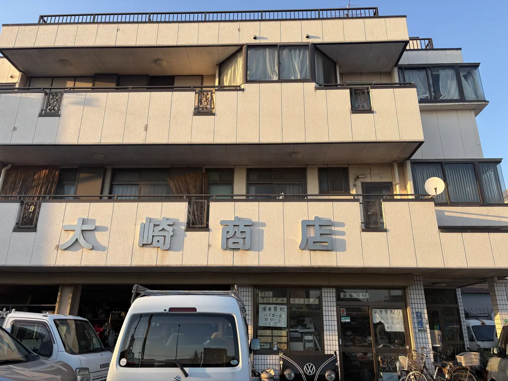
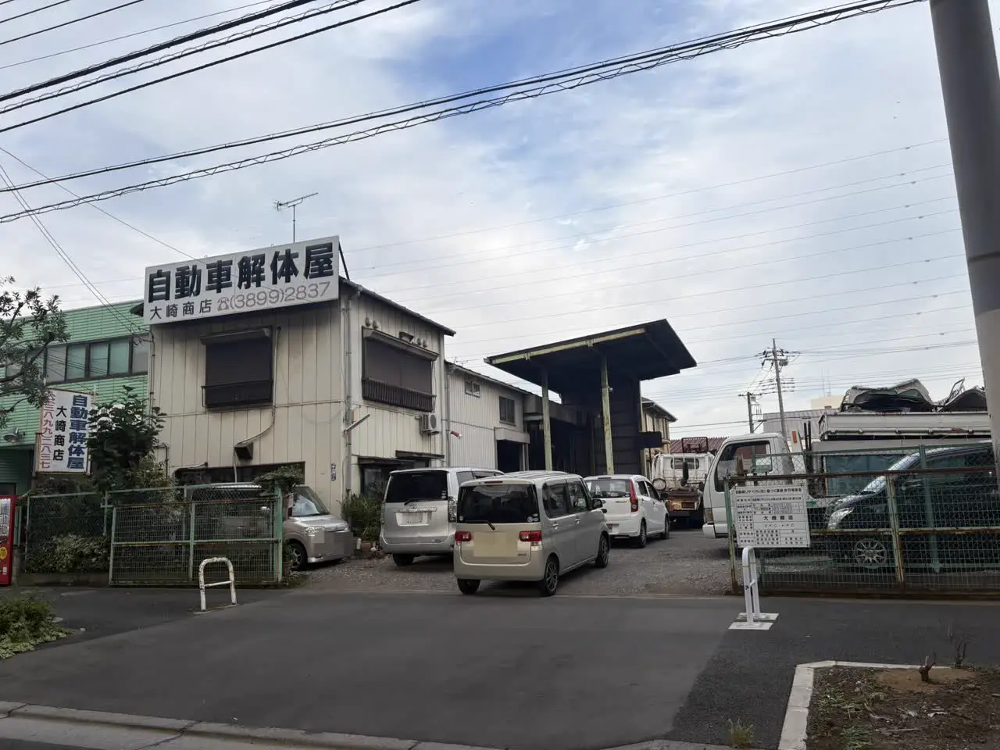
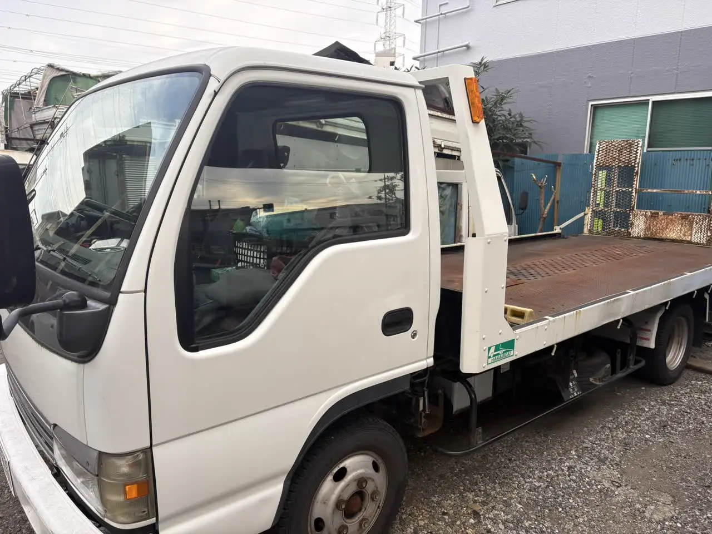
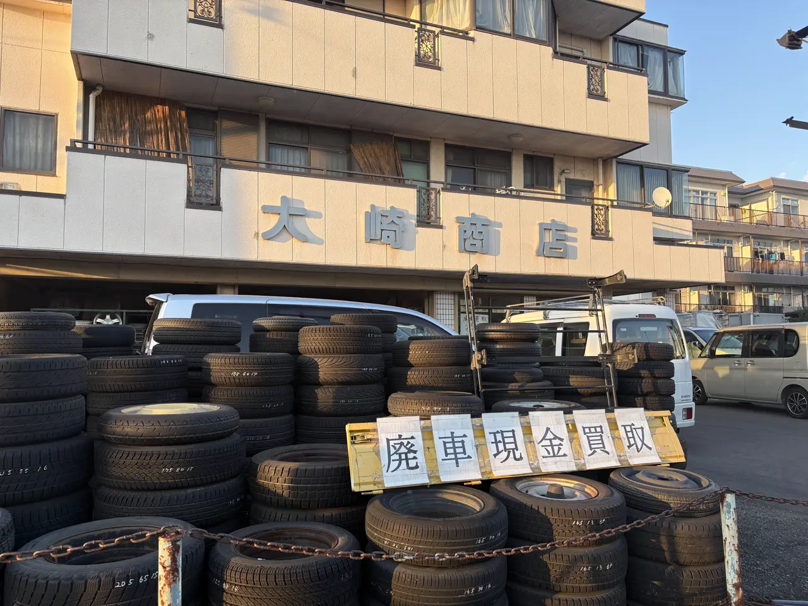

はじめて廃車を頼む方へ
大崎商店ってどんなお店？
足立区江北で自動車の解体・廃車買取をしています
公開
こんにちは、東京都足立区江北で自動車解体・廃車買取をしている「大崎商店 環七店」です。
「廃車を頼みたいけれど、どんなお店なのか分からない」
「電話する前に、お店のことを知りたい」
「ちゃんとしたお店なのか、確認したい」
廃車や車の引き取りをはじめて頼むときは、どんなお店か分からないまま電話するのは、不安に感じるかもしれません。
この記事では、廃車を頼むお店の見方と、大崎商店がどんなお店かを、やさしくご紹介します。
① 廃車を頼むお店を選ぶときの見方
廃車や、車の引き取りを頼むお店は、次の点を、確認すると安心です。
- 行っている業務に必要な登録・許可を受けているか：使用済自動車の引き取りには引取業の登録、フロン類の回収にはフロン類回収業の登録、解体・部品取りには解体業の許可が必要です。引き取りだけを行い、解体は別の許可業者に依頼するお店もあるため、すべてのお店が同じ登録・許可を持つわけではありません。くわしくは、廃車にした車はどう解体される？入谷店の解体の現場の記事をご覧ください
- 解体は、どこで行うのか：自社で解体しているのか、ほかのお店に渡すのか
- 費用が、はっきりしているか：レッカー代・解体費用・手続き代行費用など、何に、いくらかかるかを、事前に案内してくれるか。くわしくは、廃車の手数料・解体費用・レッカー代は？の記事をご覧ください
- 電話で、相談できるか：車の状態や、場所を伝えて、引き取りの可否や、日程を教えてもらえるか
- お店の場所や、連絡先が、はっきりしているか
お店によって、対応や条件は異なります。気になる点は、事前に、確認してください。
② 大崎商店は、足立区の自動車解体のお店です

大崎商店は、足立区で、自動車の解体・中古部品の販売を行っているお店です。
| 項目 | 内容 |
|---|---|
| 屋号 | 大崎商店 |
| 代表者 | 大崎 浩（おおさき ひろし） |
| 業種 | 自動車解体・自動車中古部品販売 |
| 許可・登録 | 自動車リサイクル法に基づく、引取業・フロン類回収業の登録と、解体業の許可（入谷店の標識に掲示） |
| 店舗 | 環七店（足立区江北）・入谷店（足立区入谷）の2店舗 |
廃車・事故車・不動車の引き取り・買取と、それに伴う手続きに対応しています。ご相談や中古車・中古部品・タイヤの販売は環七店、自動車の解体は許可を受けた入谷店が担っています。
入谷店の入口には、自動車リサイクル法に基づく、引取業・フロン類回収業・解体業の登録・許可事業者の標識を掲げています。
③ 2つのお店の、役割

大崎商店は、2つのお店で、役割を分けています。
| 比較する点 | 環七店 | 入谷店 |
|---|---|---|
| 主な役割 | お問い合わせ・引き取りの受付、中古車・中古部品・タイヤの販売 | 自動車の解体（解体業の許可を受けた店舗） |
| 住所 | 足立区江北7丁目1−3 | 足立区入谷7丁目5−11 |
| 電話 | 03-3854-4141 | 03-3899-2837 |
| 受付時間 | 月〜土 10:00〜18:00 | 月〜土 9:30〜17:30 |
| 休業日 | 日曜・祝日 | 日曜・祝日・第2土曜 |
- 引き取りのご依頼やご相談は、環七店へのお電話が、スムーズです
- 車検が残っていて安全に自走できる車のお持ち込みは、環七店が基本です。解体を前提とする車・自走できない車は、入谷店が基本です。お電話で相談がまとまっていれば、どちらの店舗でも対応できます
- 動かない車は、事前に日時をご相談のうえ、レッカーで入谷店へ直接搬入していただくこともできます
- 車のお持ち込みは、どこからでも歓迎（基本は環七店。日時は、事前にお電話でご相談ください）
2店舗の違いと、行き方は、お店の紹介のページもご覧ください。
④ 大崎商店が、できること

- 廃車・事故車・不動車の引き取り：積載車で、車のある場所まで伺います。動かない車、事故で壊れた車も、ご相談ください。くわしくは、出張引き取りの対応エリアの記事をご覧ください
- 買取：車種や状態によっては、引き取り当日に、その場で現金買取もできます。ハイエースなどのトヨタ車は、値段がつきやすいです。買取価格は車ごとに異なるため、ご相談時に確認します。くわしくは、古い車・10万km超えの車でも値段はつく？の記事をご覧ください
- 引き取り・買取に伴う廃車手続きと、自動車の解体：解体費用・手続き代行費用・印紙代は、別請求しません。車をお預かりせず、書類手続きだけを代行する依頼は、お受けしていません
- 中古車・中古部品・タイヤの販売：修理して乗れる車は、中古車として販売しています。環七店で、ご覧いただけます
自社で解体を行っているお店なので、車の状態に合わせて、買取や引き取りの方法をご案内できます。 解体する車にも、部品・資源として買取価格がつく場合があります。お客様にお支払いする金額、お客様にお支払いいただく金額がある場合は、その金額を事前にご案内します。還付金・返戻金などを買取価格に含むかどうかも、ご依頼時にご確認ください。
⑤ お電話の前に、知っておいてほしいこと

- 環七店は、引き取りなどで、外出していることが多いです。ご来店の前に、お電話ください
- お電話の受付は、営業時間内です。日曜・祝日は、お休みです
- お電話では、車種・年式・車の状態・車のある場所を、お伺いします。車検証を、お手元にご用意ください。電子車検証の所有者情報は、自動車検査証記録事項や車検証閲覧アプリでもご確認ください
- ローンが残っているか、所有者と使用者が、ご本人かも、お伺いします。所有者が、ディーラー・販売店の場合でも、ご相談をお受けしています。売却・廃車を進める前に、所有者の同意を先に取ってきていただくようお願いしているので、ローンが残っているかも含めてお知らせください
- 環七店への来店や、お持ち込み後の帰りの交通手段：最寄り駅は、日暮里・舎人ライナー 西新井大師西駅です。バスは、「上沼田団地入口」バス停（江北3丁目）から、西新井行・王子行・赤羽行があります
足立区内の引き取りは、無料です。足立区外も、買取価格がつかない車は、環七店から片道約30分圏内は、引き取り無料です。買取価格がつく車は、圏外でも、所在地と車の状態によっては、無料で引き取り（事前にご案内します）。
お電話から引き取り、お支払いまでの流れは、「廃車のご依頼から現金お支払いまでの流れ」の記事をご覧ください。
よくある質問
Q. 大崎商店は、どんなお店ですか？
A. 足立区で、廃車・事故車・不動車の引き取り・買取などに対応するお店です。ご相談や中古車・中古部品・タイヤの販売は環七店、自動車の解体は入谷店で行います。廃車手続きは、車の引き取り・買取に伴って対応します。
Q. 環七店と入谷店は、どう違いますか？
A. 環七店は、お問い合わせ・引き取りの受付と、中古車・中古部品・タイヤの販売が中心です。入谷店は、自動車の解体を行う店舗です。
Q. はじめてで不安です。何から伝えればいいですか？
A. 「廃車について聞きたい」とお伝えください。車種・年式・車の状態・車のある場所をお伺いして、ご案内します。
Q. 電話の前に、準備するものはありますか？
A. 車検証を、お手元にご用意いただくと、ご案内がスムーズです。
Q. 日曜や祝日は、対応していますか？
A. 日曜・祝日は、お休みです。日曜・祝日にいただいたフォームやメールは、翌営業日に返信します。
Q. 見学はできますか？
A. 入谷店の作業場は危険なため、見学は基本的にお受けしていません。
廃車のご相談は、大崎商店へ
電話で相談する 03-3854-4141メールで相談する（フォーム）ご来店の前に、お電話ください。引き取りなどで外出していることもあり、お電話いただければ、受け入れの可否や、ご案内できる日時をお伝えできます。
大崎商店 環七店
電話：03-3854-4141
〒123-0872
東京都足立区江北7丁目1−3
営業時間：月〜土 10:00〜18:00
休業日：日曜・祝日
環七沿い／舎人ライナー
西新井大師西駅
大崎商店 入谷店
電話：03-3899-2837
〒121-0836
東京都足立区入谷7丁目5−11
営業時間：月〜土 9:30〜17:30
休業日：日曜・祝日・第2土曜
引き取りやご相談のお電話は、環七店がスムーズです。お電話の際は、「廃車について聞きたい」とお伝えください。
※掲載の写真は、実際の大崎商店（環七店・入谷店）で撮影したものです。
参考：環境省・自動車リサイクルの概要／東京都環境局・業務ごとに必要な登録・許可／東京都環境局・関連事業者の検索